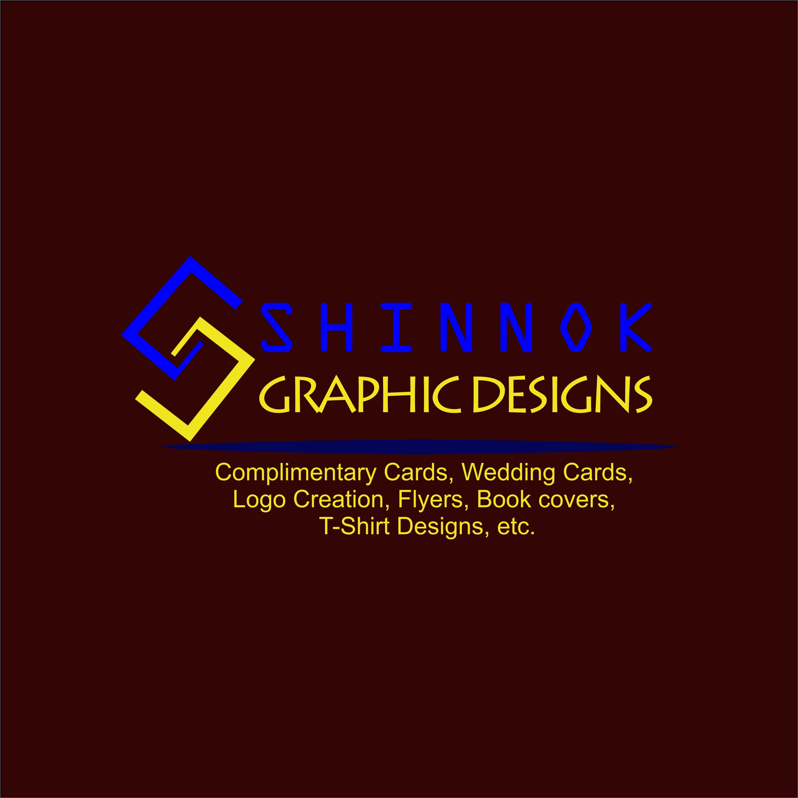

GRAPHIC DESIGNS
A quick view of thumbnails of Graphical Jobs which I have designed either for fun or for organisations.
WEB DEVELOPMENT
A quick view of some web development projects which I have carried out during my on-going training in Udacity
partnering with Google and Andela.
VIDEO CLIPS
A quick view of some video projects carried out by me.